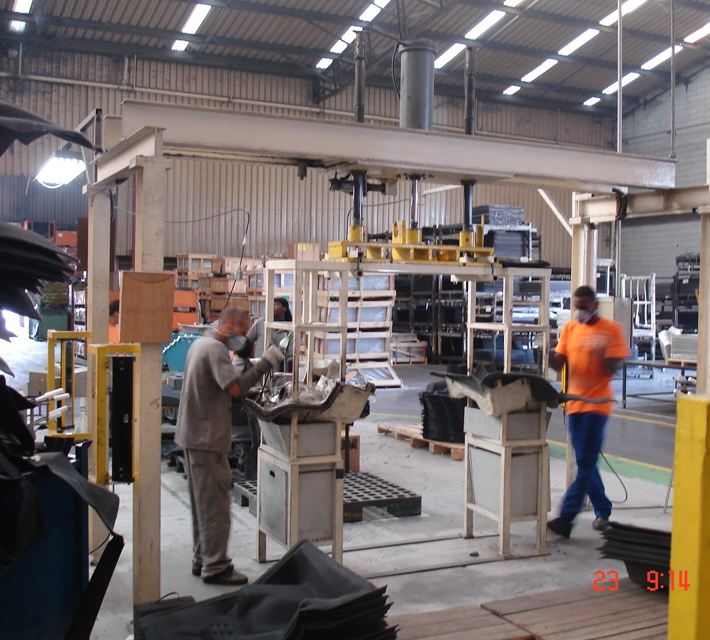
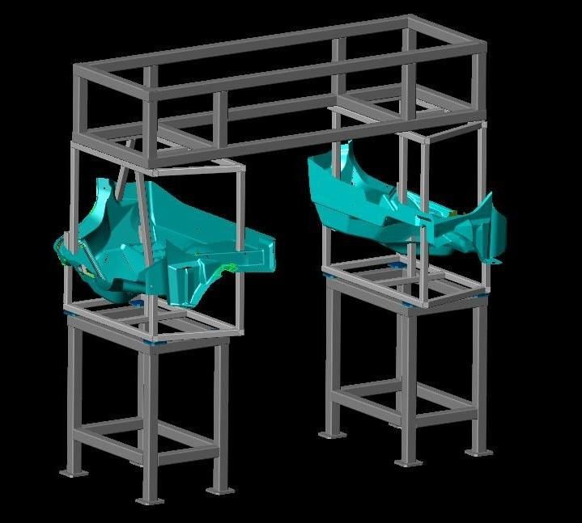
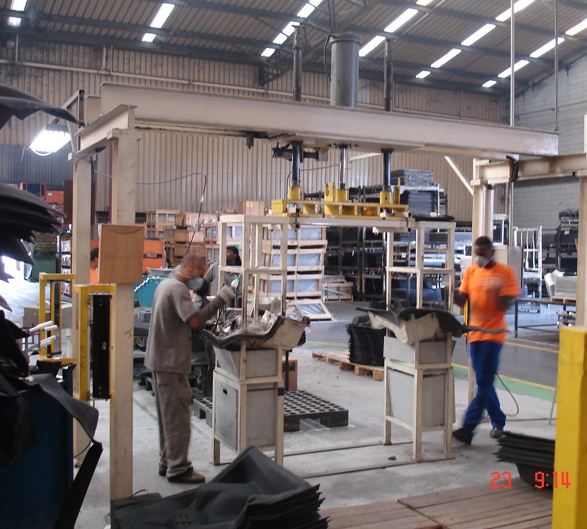
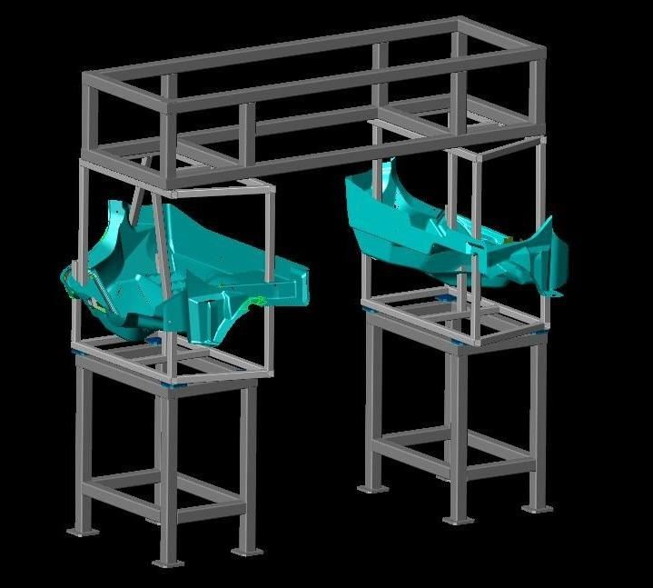

Nossos Projetos
Ao longo de nossa trajetória, desenvolvemos soluções inovadoras em engenharia e automação para os mais diversos segmentos industriais.
1. Robô Autônomo de Desinfecção UVC
Cliente: UVtronic
Diante do cenário pandêmico e da urgente necessidade de tornar ambientes seguros e livres de patógenos, a SIMA foi desafiada a criar uma solução de desinfecção que fosse não apenas eficaz, mas também autônoma. O projeto abrangeu todo o ciclo de vida do produto, desde o conceito inicial e prototipagem até a integração da tecnologia UVC com uma plataforma robótica Omron, comissionada para operar de forma remota e segura.


Tecnologias Chave:
AMR, arduino, UVC, Inventor.
Solução Proposta:
- Concepção do sistema UVC integrado a uma plataforma robótica Omron, com mobilidade guiada por sensores.
- Desenvolvimento de protótipos para validação da dose e penetração dos raios UVC em diferentes superfícies.
- Implementação de interfaces de operação remota, garantindo segurança do operador e isolamento do feixe UVC.
- Testes de ciclo de vida e certificação de componentes para operação contínua em ambientes críticos.
Resultados/Destaques:
- Redução significativa da carga microbiana em múltiplos ambientes testados.
- Operação remota e autônoma sem necessidade de intervenção manual durante o ciclo de desinfecção.
- Conformidade com padrões de segurança para tecnologia UVC em espaços habitados.
2. Linha de Cura Ultravioleta para Vasilhames P13
Cliente: Supergasbrás
O processo convencional de pintura do cliente limitava a produtividade devido a longos tempos de cura, criando gargalos na linha. A meta era integrar uma cabine de cura ultravioleta de alta performance à infraestrutura existente.


Tecnologias Chave:
UV LED, CLP, HMI, Siemens, Inventor.
Solução Proposta:
- Engenharia e construção de cabine customizada com arrays de módulos UV micro-ondas de alta irradiância.
- Adaptação mecânica e elétrica para encaixe direto na linha de pintura atual, sem paradas prolongadas.
- Validação de resistência mecânica e aderência da tinta após cura.
Resultados/Destaques:
- Eliminação do forno de cura e do tempo de espera tradicional.
- Cura imediata da tinta, garantindo resistência mecânica superior.
- Aumento de throughput na linha de pintura, sem comprometer qualidade.
3. Dispositivos de Solda Ponto, Projeção e MIG/MAG
Cliente: Diversos (Automotivo, Siderúrgico e Metalmecânico)
A SIMA desenvolveu e fabricou uma linha completa de dispositivos e ferramental de solda para máquinas estacionárias de solda a ponto e projeção, abrangendo desde o desenvolvimento do processo até a instalação em planta. O objetivo foi criar soluções robustas, precisas e adaptadas à realidade produtiva de cada cliente, integrando totalmente o ferramental às máquinas e sistemas de automação existentes.
Tecnologias Chave:
Inventor, CLP, IHM, Pneumática, Servoacionamento, FEA.
Solução Proposta:
- Engenharia turn-key: desenvolvimento do processo, projeto mecânico, fabricação, montagem, testes e instalação final.
- Configurações personalizadas: dispositivos manuais, semiautomáticos ou automáticos, com ou sem sistema de set-up rápido.
- Versões estáticas ou móveis, com acionamento pneumático, servo-elétrico ou manual, conforme a aplicação e ciclo produtivo.
- Integração total com máquina de solda, incluindo lógica de funcionamento, sensores de presença e intertravamentos de segurança.
- Compatibilidade com sistemas periféricos, como alimentadores automáticos, extração de fumos e carrosséis giratórios.
Resultados/Destaques:
- Precisão e repetibilidade na soldagem, reduzindo falhas e retrabalhos.
- Integração completa com sistemas automáticos, permitindo rastreabilidade e monitoramento em tempo real.
- Projetos modulares e escaláveis, adequados a lotes pequenos ou linhas de alta cadência.
- Redução de tempo de setup e maior disponibilidade da célula produtiva.
4. Banheiro Público PNE
Cliente: Prefeitura de São Paulo
Atendendo ao interesse da Prefeitura de São Paulo em modernizar a infraestrutura sanitária de praças e espaços públicos, nossa equipe foi convidada a desenvolver um banheiro público fixo, com pontos de água e esgoto integrados, que respeitasse as diretrizes de design urbano da cidade. O desafio principal era conciliar um visual contemporâneo e alinhado à identidade paulistana com requisitos de durabilidade, facilidade de manutenção e flexibilidade de instalação, mesmo em locais com espaços reduzidos.
Tecnologias Chave:
Corte laser, Inventor, Análise de Elementos Finitos (FEA).
Solução Proposta:
- Estrutura compacta e modular: projetada para otimizar o uso do espaço disponível, permitindo instalação rápida e padronizada em múltiplas localidades.
- Shaft técnico isolado: o acesso a instalações hidráulicas e sanitárias fica restrito a um shaft externo ao habitáculo interno, eliminando necessidade de intervenção dentro da área de uso e garantindo segurança e higiene.
- Materiais de alta performance: aço inoxidável e compósitos de alta resistência ao clima urbano, com tratamento anticorrosivo e superfície lisa, facilitando a limpeza e a conservação.
- Design ergonomicamente pensado: layout interno que prioriza circulação, acessibilidade universal (conforme NBR 9050) e conforto dos usuários, incluindo barras de apoio e assentos adaptados.
- Integração ao paisagismo: acabamento externo em painéis com cores neutras e texturas suaves, permitindo harmonização com mobiliário urbano existente e sinalização municipal.
Resultados/Destaques:
- Implantação ágil em diversas praças-piloto, reduzindo o tempo de obra em até 30%.
- Manutenção simplificada: intervenções hidráulicas e elétricas realizadas sem abrir o habitáculo principal, diminuindo custos operacionais em 25%.
- Alto grau de satisfação dos munícipes, refletido em indicadores de uso e feedback positivo das Secretarias de Urbanismo e Patrimônio.
- Conformidade plena com as normas municipais de acessibilidade, segurança e estética, servindo de referência para futuras expansões do programa de sanitários públicos.
5. Módulo de Cura UV LED
Cliente: ZF do Brasil
O cliente identificou um processo produtivo estabelecido que apresentava limitações em eficiência e altos custos de manutenção. O desafio era incrementar a produtividade em curto prazo e ao mesmo tempo reduzir o tempo e o custo das paradas de manutenção, sem alterar significativamente a linha existente.
Tecnologias Chave:
Corte laser, Inventor, Solda TIG, Programação CLP e HMI.
Solução Proposta:
- Substituição da tecnologia de cura UV: implantamos um sistema de emissores baseado em tecnologia LED UV de alta performance, compatível com o perfil operacional da planta.
- Adequação de hardware e controle: atualizamos drivers e controles elétricos, garantindo compatibilidade com o novo sistema de LED e reduzindo picos de consumo.
- Integração modular: mantivemos a estrutura principal do equipamento, adicionando emissores de LED UV em módulos substituíveis, facilitando futuras atualizações e manutenções pontuais.
- Treinamento e manual de manutenção: oferecemos capacitação técnica à equipe de manutenção do cliente e preparamos documentação simplificada com procedimentos de diagnóstico rápido.
Resultados/Destaques:
- Produtividade ampliada em 20%: o novo sistema de cura melhorou o ciclo operacional, acelerando inspeções e ajustes em linha.
- Redução de 15% no custo de manutenção: graças à maior vida útil dos emissores LEDs e à padronização dos módulos, diminuiu-se a frequência de troca de componentes.
- Tempo de manutenção 60% menor: a modularidade do sistema e os procedimentos otimizados permitiram intervenções mais rápidas, reduzindo janelas de parada e retrabalho.
6. Tesoura Hidráulica para Corte de Tubos Metálicos
Cliente: Engsoil
Com o objetivo de desenvolver uma solução de corte de sucata que fosse proprietária, a SIMA empreendeu o projeto completo de uma tesoura hidráulica. O desenvolvimento focou em criar um equipamento de alta capacidade, robusto e otimizado para a realidade das operações de processamento de tubos e sucatas metálicas.
Tecnologias Chave:
Corte laser, Inventor, Análise de Elementos Finitos (FEA).
Solução Proposta:
- Desenvolvimento completo do equipamento hidráulico com cilindros de alta força e lâminas reforçadas.
- Estrutura otimizada para fácil manutenção e troca de facas.
- Projeto de circuito hidráulico com válvulas de controle de fluxo de baixo ruído.
- Testes de resistência e segurança conforme normas NR-12.
Resultados/Destaques:
- Corte seguro de sucata de tubos e perfis metálicos com alta performance.
- Processamento mais eficiente, reduzindo retrabalhos e tempo de parada.
- Maior vida útil das facas, otimizando custos de reposição.
7. Sistema Compacto de Cura UV para Impressora Offset
Cliente: Astergraf
A SIMA desenvolveu um sistema completo e compacto de cura ultravioleta (UV) para integração em uma impressora offset de alta velocidade, superando desafios de espaço extremamente restrito e a necessidade de operar com tolerância de apenas 2 mm em relação a componentes móveis da máquina. O projeto exigiu uma solução de engenharia sob medida, combinando alta potência óptica, refrigeração líquida eficiente e precisão mecânica em um ambiente produtivo contínuo.


Tecnologias Chave:
SolidWorks, Termodinâmica Aplicada, Refrigeração Líquida, Integração Óptica, Alumínio Usinado, Impressão 3D, LED UV de Alta Intensidade.
Solução Proposta:
- Desenvolvimento completo do sistema, desde a concepção do módulo óptico até a integração com a impressora existente.
- Projeto customizado do cabeçote de LED UV, com carcaça ultracompacta e refrigeração líquida integrada, assegurando estabilidade térmica em regime contínuo.
- Uso de impressão 3D para prototipagem rápida e validação dimensional em múltiplas iterações.
- Integração mecânica precisa, mantendo alinhamento e segurança mesmo com as vibrações e altas velocidades do equipamento gráfico.
Resultados/Destaques:
- Eliminação de gargalos produtivos, com aumento significativo da taxa de produção e redução de paradas não programadas.
- Integração perfeita entre o sistema de cura UV e o ciclo de impressão, sem comprometer a geometria ou a segurança da máquina.
- Design modular e compacto, permitindo fácil manutenção e futura expansão.
8. Reboque para Transporte de Veículos
Cliente: AC Implementos Rodoviários
O cliente buscava aprimorar seu produto e processo de fabricação para ganhar competitividade. A SIMA foi encarregada de realizar a engenharia completa do implemento de transporte, com o desafio de desenvolver processos de produção mais ágeis que garantissem total repetibilidade na qualidade e na forma do reboque final.
Tecnologias Chave:
Inventor, Solda MIG, Hidráulica, Galvanização.
Solução Proposta:
- Revisão de layout de produção com células modulares e fluxo enxuto (lean manufacturing).
- Padronização de gabaritos e dispositivos de fixação para reduzir ajustes manuais.
- Documentação de processo e rotina de inspeção em linha.
- Projeto de componentes com tolerâncias otimizadas para montagem sem remanejamentos.
Resultados/Destaques:
- Qualidade final superior e consistência dimensional.
- Aumento de rendimento fabril e redução de retrabalhos.
- Produto mais durável e confiável em operação.
9. Berço de Corte
Cliente: Rieter
A qualidade final do revestimento interno do forro de um carro depende da precisão do seu corte de acabamento. Para garantir essa precisão e a consistência do processo, a SIMA desenvolveu e construiu um berço de corte customizado, uma solução de engenharia focada em fornecer um gabarito estável e preciso para a operação de corte.
 



Tecnologias Chave:
Autodesk Mechanical, Solda MIG, Modelagem.
Solução Proposta:
- Concepção de berço com superfícies de referência usinadas e guias de alinhamento estrito.
- Sistema de fixação rápida para longevidade e repetibilidade.
- Materiais de baixo atrito para garantir integridade do produto final.
- Ensaios de validação com amostras reais, calibrando tolerâncias.
Resultados/Destaques:
- Precisão dimensional dentro das especificações do cliente.
- Ganhos expressivos na qualidade do acabamento final.
- Redução de peças rejeitadas por falha de corte.
10. Máquina de corte para Para-choque Citroën C3 XTR
Cliente: PSA Peugeot Citroën
A SIMA projetou um sistema de corte e punçionamento de alta precisão para a execução de furos de montagem em para-choques plásticos externos do modelo Citroën C3 XTR. O equipamento foi desenvolvido para operar diretamente na linha de produção, garantindo acabamento superficial perfeito, posicionamento exato e alta repetibilidade — requisitos críticos para componentes visuais de carroceria.


Tecnologias Chave:
CATIA, Siemens NX, Hidráulica, Pneumática, CLP, Sensores de Segurança, Cortinas de Luz, Ferramentaria de Precisão.
Solução Proposta:
- Engenharia completa da máquina, desde o conceito até o projeto executivo.
- Tradução das superfícies Classe A fornecidas pelo estúdio de design para geometrias viáveis de fabricação, preservando o acabamento estético exigido pela montadora.
- Integração de sistemas de segurança, incluindo cortinas de luz, sensores de presença e intertravamentos conforme normas NR12.
- Projeto detalhado das ferramentas de corte e punção, utilizando cilindros hidráulicos para o acionamento e sistemas pneumáticos para o posicionamento preciso da peça.
Resultados/Destaques:
- Alta confiabilidade e repetibilidade, mesmo em operação contínua de alta cadência.
- Integração ergonômica e segura, garantindo produtividade com total conformidade às normas de segurança.
- Flexibilidade de aplicação, permitindo ajustes e adaptações para diferentes geometrias de peças.
11. Sistema de Cura UV com Esteira Automatizada
Cliente: Duracril
A SIMA desenvolveu um sistema completo de cura UV com esteira automatizada, projetado para atender à necessidade de um processo de colagem com adesivos instantâneos, exigindo controle preciso de exposição à radiação UV, segurança operacional e baixo custo. O projeto foi idealizado para oferecer desempenho industrial sem o uso de CLP tradicional, substituído por um sistema inteligente baseado em Arduino.


Tecnologias Chave:
SolidWorks, Arduino, IHM Touch, Sensores de Presença, Atuadores, Fontes UV, Automação de Baixo Custo.
Solução Proposta:
- Projeto turn-key completo: concepção, projeto mecânico, montagem, automação, programação e comissionamento final.
- Controle integrado via Arduino: programação da lógica de operação, temporização e interface homem-máquina (IHM) personalizada.
- Segurança operacional: sensores de presença, enclausuramento de lâmpadas UV e intertravamentos automáticos.
- Montagem e testes completos: execução integral pela equipe SIMA, incluindo cabeamento, ajustes e validação em campo.
Resultados/Destaques:
- Solução industrial acessível, com confiabilidade comparável a sistemas baseados em CLP.
- Interface moderna e amigável, simplificando a operação e reduzindo tempo de treinamento.
- Execução completa — do conceito à instalação — em curto prazo e com excelente relação custo-benefício.